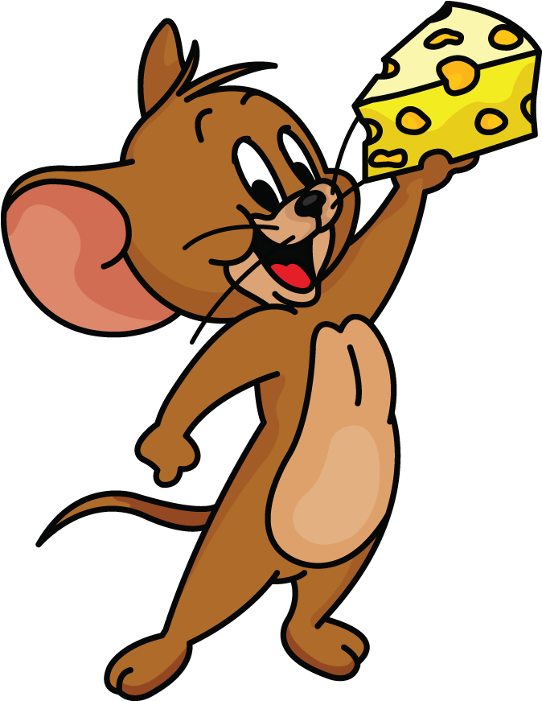

Hi, My name is Ankit
and I am a passionate

Work Experience

HTML Developer (2018-2019)
He sat across from her trying to imagine it was the first time. It wasn't. Had it been a
hundred? It quite possibly could have been. Two hundred? Probably not. His mind wandered until
he caught himself and again tried to imagine it was the first time.

HTML Developer (2018-2019)
He sat across from her trying to imagine it was the first time. It wasn't. Had it been a
hundred? It quite possibly could have been. Two hundred? Probably not. His mind wandered until
he caught himself and again tried to imagine it was the first time.
HTML Developer (2018-2019)
He sat across from her trying to imagine it was the first time. It wasn't. Had it been a
hundred? It quite possibly could have been. Two hundred? Probably not. His mind wandered until
he caught himself and again tried to imagine it was the first time.
HTML Developer (2018-2019)
He sat across from her trying to imagine it was the first time. It wasn't. Had it been a
hundred? It quite possibly could have been. Two hundred? Probably not. His mind wandered until
he caught himself and again tried to imagine it was the first time.

HTML Developer (2018-2019)
He sat across from her trying to imagine it was the first time. It wasn't. Had it been a
hundred? It quite possibly could have been. Two hundred? Probably not. His mind wandered until
he caught himself and again tried to imagine it was the first time.

About Me
Name: Ankit Raj
Age: 21
Conatct: ankitraj5309@gmail.com
Profession: Web Developer
Description: I am a passionate web developer with a love for creating dynamic and interactive web pages. I enjoy coding, learning new technologies, and improving my skills.
Skills :


My Projects
Project 1: Portfolio Website
A personal portfolio website to showcase my skills and projects. Built using HTML, CSS, and JavaScript.
Technologies: HTML, CSS, JavaScript
GitHub Repo | Live DemoProject 2: IoT Smart Home System
An IoT-based home automation system that allows users to control devices remotely. Developed during my internship.
Technologies: Python, Arduino, IoT
GitHub Repo